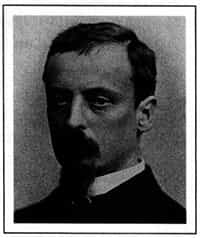

ХЕНРИК СЈЕНКЈЕВИЧ (1846-1916)
Хенрик Сјенкјевич рођен је 1846. године у Воли Окжејској, на ујаковом имању у источној Пољској, у породици осиромашеног племства. Детињство је провео на селу и сматра се да је то имало пресудан утицај на његов каснији развој. Ту је упознао обичаје, навике и тежак живот пољског народа.
У његовој породици су од давнина постојале јаке књижевне традиције. Мајка је водила порекло из породице која је дала Пољској једног великог историчара и напредног политичара, и једну познату књижевницу.
Једном приликом Сјенкјевич је рекао да је славног пољског песника, Јулијана Њемцевича, познавао још пре него што је научио да чита. Учили су га да рецитује његове песме.
Мали Хенрик Сјенкјевич је желео да постане витез, као што су били они о којима је читао у књигама. Након тога је „Робинзон Крусо” побудио жељу за далеким путовањима и непознатим местима. А онда је дошла лектира о Наполеону. Она је највише надахнула Сјенкјевича, као и одрасле Пољаке током скоро целог XIX века.
На Варшавском универзитету студирао је најпре права и медицину, а после само годину дана, пребацио се на историју и књижевност. Школовање је напустио 1870, пре него што је дипломирао, оставши без новца.
Још као студент писао је колумну за локалне новине. Његово најраније дело, „Жртва”, никада није пронађено. Са путовања по Немачкој, Француској и Енглеској слао је пољским новинама путописе под псеудонимом Литвос. Поред Европе, пропутовао је и Америку и Африку.
По повратку у Варшаву, крајем 1879, постао је један од уредника конзервативних новина „Слово”, у којима је штампао своје ране приче.
Тада се посветио проучавању историје и инспирисан Валтером Скотом и француским историјским романима, отпочео је рад на сопственој трилогији о Пољској средином XVII века: „Огњем и мачем”, „Потоп” и „Пан Володијовски”.
За роман „Quo vadis?”, његово најпопуларније дело, које говори о настанку хришћанства у Риму за време Неронове владавине, награђен је Нобеловом наградом. Роман је преведен на више од педесет светских језика и један је од првих екранизованих романа.
Иако је намењен младим читаоцима, роман „Кроз пустињу и прашуму” заузима почасно место у стваралаштву Хенрика Сјенкјевича. Написан је 1910. године, а још увек је једна од најпопуларнијих књига за децу широм света.
Сјенкјевич је био неизмерно популаран у Пољској и 1900, националним доприносима је скупљено довољно средстава да му се купи дворац у коме су живели његови преци.
Умро је 1916. године у Швајцарској, у којој је живео током Првог светског рата. Осам година након смрти Сјенкјевичево тело пренето је у Пољску.